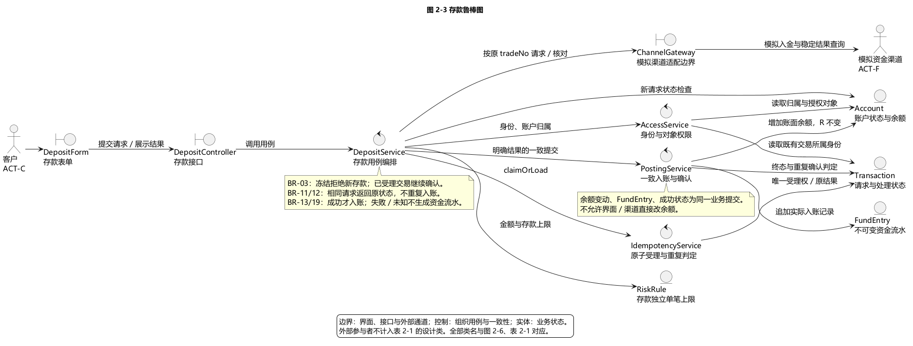
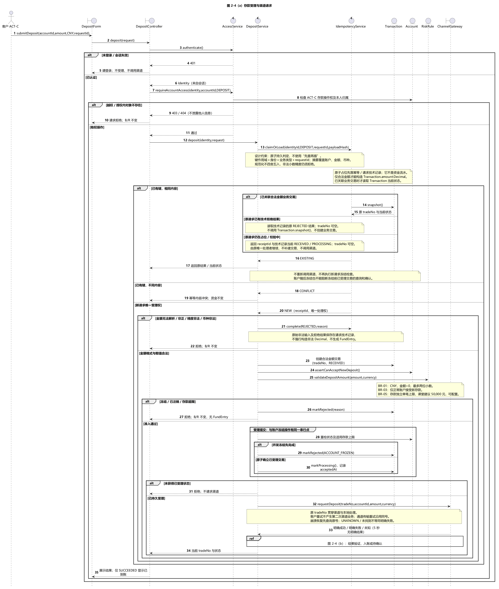
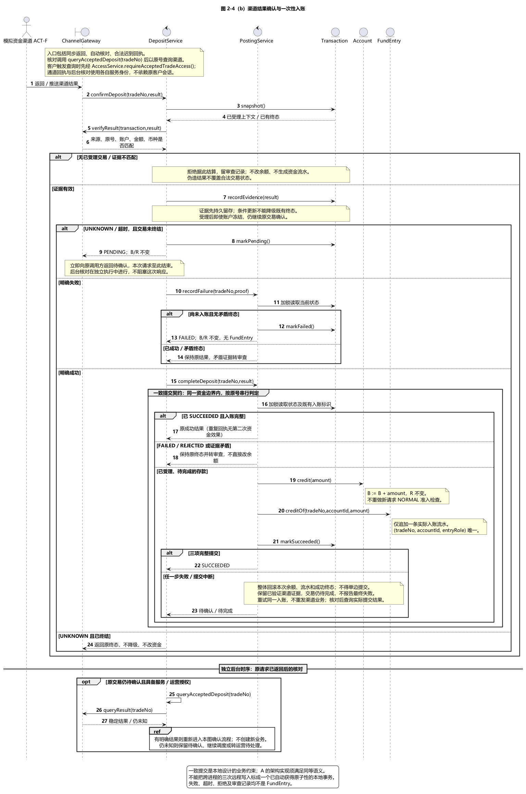
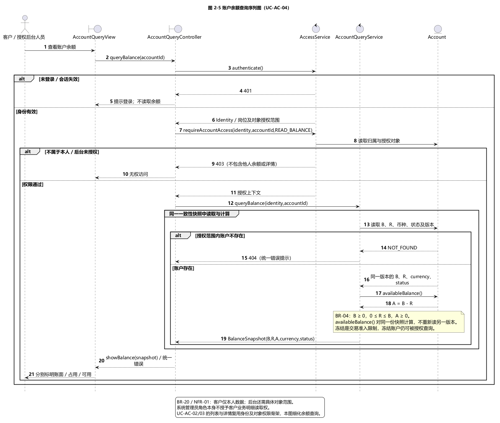
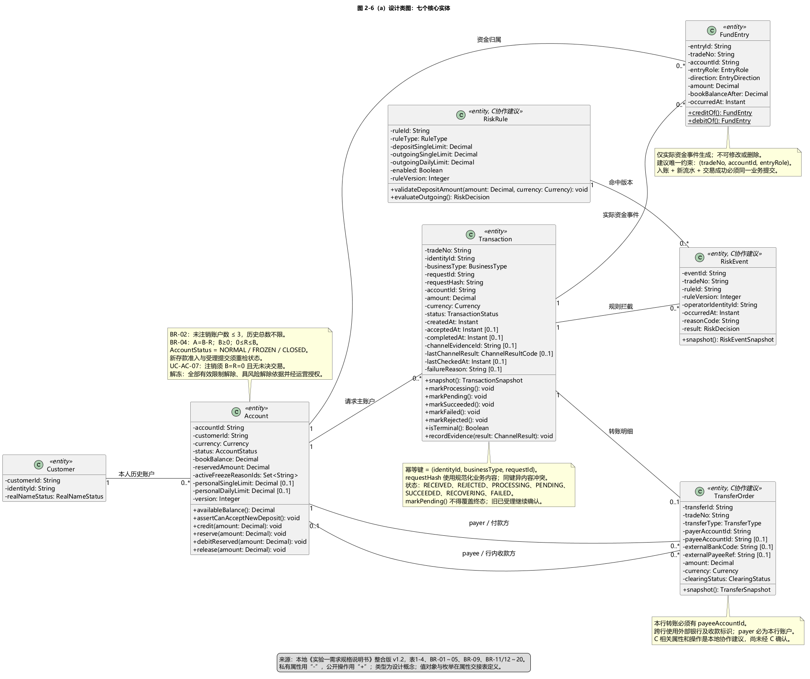
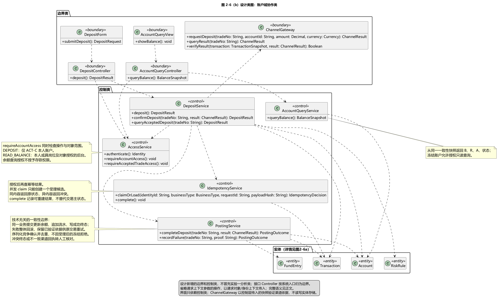

2.2.1 账户域用例实现
账户域设计细化存款 UC-TR-01 与账户余额查询 UC-AC-04，并为账户列表 UC-AC-02、账户详情 UC-AC-03 提供共用的授权查询骨架。设计由边界类接收请求，控制类组织身份检查、幂等受理、渠道交互和资金提交，实体类维护业务状态。图 2-3 至图 2-6 分别说明职责、交互顺序与静态结构；表 2-1 是这些图共用的类名清单。
业务依据为本地《实验一需求规格说明书》整合版 v1.2 第 2.2—2.5 节及第 3 节。需求书规定冻结账户拒绝新存款，冻结前已受理交易继续确认；本设计据此使用 BR-03 账户状态、BR-11/12 幂等、BR-13 存款入账、BR-19 资金流水和 BR-20 权限编号。资金流水实体名为 FundEntry；它与 Transaction 的处理状态分开。详细追踪见需求追踪与基线说明。
2.2.1.1 职责划分与存款鲁棒分析
如图 2-3 所示，DepositForm 收集账户、币种、金额和 requestId，DepositController 处理接口接入并将认证后的身份传给 DepositService。DepositService 依次组织授权、幂等、业务准入和渠道请求，不让界面或模拟渠道直接修改账户实体。


AccessService 检查身份、业务操作权和对象权限。存款入口传入 DEPOSIT 操作范围，仅允许客户办理本人账户；余额查询传入 READ_BALANCE，后台角色还必须满足查询岗位和具体对象授权。拥有后台查询权不等于可以代客户存款。IdempotencyService 负责原子获得处理权并返回已有请求的当前结果。ChannelGateway 隔离模拟入金、结果查询和结果来源验证。PostingService 组织资金提交，保证 Account 余额、FundEntry 与 Transaction 的成功状态一致。RiskRule 在本用例中提供存款独立单笔上限，不能将出账限额套用于存款。
Account、Transaction、FundEntry 和 RiskRule 通过控制类协作。图中没有边界类直连资金实体的修改路径。外部客户和模拟资金渠道是参与者，不作为表 2-1 的设计类。
2.2.1.2 存款受理与幂等
如图 2-4（a）所示，系统先验证身份与账户归属，再处理幂等。身份取自会话，不能信任客户端自行传入的身份号。幂等键使用“身份、业务类型、requestId”的组合；请求内容摘要覆盖账户、币种和金额等业务内容，规范化不能把非法精度舍入成合法金额。

图 2-4（a）存款受理与渠道请求。SVG；与（b）共用存款序列图源文件。

IdempotencyService 的 claimOrLoad 必须完成持久、原子的占位和判定，不能仅执行一次查询再另行插入。两个同时到达的相同请求只有一个获得新业务处理权。相同键和相同内容返回原处理结果；已经形成业务交易时附原 tradeNo 和当前状态，非法金额等仅有技术拒绝记录时直接返回原 REJECTED 结果，tradeNo 可空，不调用 Transaction.snapshot() 或补建交易。相同键和不同内容返回冲突。返回已有结果前仍须检查对象权限，不能借 requestId 查询他人交易。已有交易应读取当前状态，不将早期“处理中”缓存永久当作结果。
若第二个同内容请求恰在首请求占位后、创建业务交易或形成拒绝结果前到达，则返回 receiptId 与请求技术记录当前的 RECEIVED/PROCESSING，tradeNo 可空，由原唯一处理者继续。不能把“尚无 Transaction”误判成新请求。进程中断后的接管也必须依持久记录和受保护的处理权恢复；若已有渠道提交意图，先按原号核对，不能因占位超时自动另建资金业务。
无法解析、非正或精度非法的金额通过请求技术记录保留原输入摘要与拒绝结果，不强行写入 Transaction.amount:Decimal，也不生成 FundEntry。金额合法的业务请求才构造 Transaction；冻结、注销或存款超限可形成 REJECTED 交易，其 acceptedAt 为空。技术处理记录与不可变资金流水分别保存。
新存款需满足 CNY、正金额、最多两位小数、账户正常和存款单笔上限。需求书的 50,000 元是课堂建议参数，设计由 RiskRule 配置，不能作为现实银行标准。存款不要求账户已有可用余额，也不占用用于出账的 reservedAmount。
新受理与冻结操作必须有同一串行判定点。设计在确立 acceptedAt、将交易推进 PROCESSING 时重检账户状态及适用规则版本：冻结先完成则拒绝新存款；受理先完成则属于既有业务，随后冻结不能中断其确认。准入重检、受理状态与冻结之间的并发控制属于实现时必须满足的契约。
受理持久化后，ChannelGateway 使用原 tradeNo、账户、金额与币种请求模拟渠道。客户重复提交不会创建第二次渠道业务。内部传输重试须沿用原号并依赖模拟渠道同号幂等；崩溃恢复先查询原号，未知或“暂未找到”本身不能作为资金失败证据。
2.2.1.3 渠道结果与一致入账
如图 2-4（b）所示，直接返回、后续核对和迟到回执统一进入 confirmDeposit。结果先核对来源、交易号、账户、金额和币种；仅验证通过的渠道依据可以推动资金处理。客户触发查询还需检查原交易权限，自动核对和回执使用服务身份及各自授权，不能因为原客户会话过期而永久停止已受理业务。

图 2-4（b）渠道结果确认与一次性入账。SVG。

明确成功时，PostingService 在一个资金一致性边界内重新读取交易状态，增加 Account.bookBalance，追加一条 FundEntry，并将 Transaction 标为 SUCCEEDED。reservedAmount 保持原值；不能把其他出账业务的占用清零。流水以交易号、账户与资金角色标识唯一资金效果。重复回执返回已有完整成功结果，不重复入账。
余额、资金流水和成功终态必须全部提交或全部不提交。任一步失败，不能对外报告已到账，也不能把渠道已经成功的交易直接判为最终失败。保留验证过的渠道依据，以原交易号重试本地资金提交；提交结果未知时先核对本地记录。这里规定的是业务提交契约，具体技术由 A 的架构设计落实；跨进程的多次普通远程写入并不会自动获得本地事务的原子性。
渠道明确失败且原交易尚未入账时，交易进入 FAILED，B/R 不变，不生成入账、退款或冲正流水。外部 5 秒内无明确结果时，交易进入 PENDING，并立即向原请求返回待确认。后续自动查询是独立后台时序，不能让本次接口响应等待核对循环结束；持续未知时转运营待处理。
终态判断与更新必须防并发：成功回执与超时同时发生时，迟到的 markPending 不能把 SUCCEEDED 降级；成功后再收到失败、或失败后再收到矛盾成功时，保留既有终态并转审查，不直接改余额。recordEvidence 记录依据，不意味着可以覆盖已确认的资金事实。
2.2.1.4 账户查询
如图 2-5 所示，AccountQueryController 先调用 AccessService 检查身份与对象范围，再由 AccountQueryService 读取账户。未登录返回 401，越权返回 403；授权范围内不存在的账户使用统一不存在提示。系统管理员角色本身不赋予客户业务明细读取权。


余额返回账面余额 B、占用金额 R、可用余额 A、币种和账户状态。Account.availableBalance() 是操作，按 A=B-R 计算；A 不作为可以独立修改的账户字段。读取 B/R 与计算 A 使用同一版本快照，始终满足 B≥0、0≤R≤B、A≥0。冻结限制资金准入，不阻止授权查询。账户列表及详情复用该授权骨架，不在本图扩展额外用例。
2.2.1.5 从分析类到设计类
需求书表 1-4 的七个核心类作为演进起点。图 2-6（a）补属性、操作、类型、可见性和关联，图 2-6（b）补边界类、控制类及调用依赖。各面板共同组成图 2-6，不额外占用其他成员的图号。

图 2-6（a）核心实体设计。SVG。


图 2-6（b）边界与控制协作。SVG；与（a）共用设计类图源文件。

FundEntry 同时关联 Transaction 和 Account，显式补清分析图中未画出的流水账户归属。TransferOrder 以 payerAccountId、payeeAccountId 区分付款和收款角色，避免把 Transaction 的主账户关系误解为转账只有一方。客户可以保留零到多个历史账户，“最多三个”约束仅作用于未注销账户，正常与冻结均计入。账户注销必须同时满足 B=0、R=0 且无未决业务，依据 UC-AC-07；解冻依 BR-09 解除全部有效限制并满足运营授权及所需风险依据。
类型使用 Decimal、Instant、枚举和逻辑标识，不使用物理数据库类型。TransferOrder、RiskRule、RiskEvent 的细化属性是面向 C 的完整协作建议，尚未经过成员 C 联合评审；这些建议不表示 B 已完成 C 的交易和风控图。银行卡、告警与独立对账仍为需求书中的待评审候选，当前模型不将它们扩入核心实现。
表 2-1 设计类清单
本表汇总当前本地设计包的全部 17 个实体、控制与边界类。接口 Controller 在本设计中只负责接入，因此归边界类；业务编排归相应 Service。它是交给 C 继续补充的全局基准初版，不表示其他成员已经确认。图中的参与者、数据返回值和枚举不作为独立设计类重复登记。
| 序号 | 实体类 | 控制类 | 边界类 |
|---|---|---|---|
| 1 | Customer | — | — |
| 2 | Account | — | — |
| 3 | Transaction | — | — |
| 4 | FundEntry | — | — |
| 5 | TransferOrder | — | — |
| 6 | RiskRule | — | — |
| 7 | RiskEvent | — | — |
| 8 | — | AccessService | — |
| 9 | — | DepositService | — |
| 10 | — | IdempotencyService | — |
| 11 | — | PostingService | — |
| 12 | — | AccountQueryService | — |
| 13 | — | — | DepositForm |
| 14 | — | — | DepositController |
| 15 | — | — | ChannelGateway |
| 16 | — | — | AccountQueryView |
| 17 | — | — | AccountQueryController |
七个实体的字段名、设计类型、约束、可空性和需求出处详见交接 D 的设计类属性清单。该表是库表设计输入，数据库物理类型、表拆分和索引由 D 负责；幂等唯一作用域必须保留身份及业务类型语义，不应在映射时退化为未经论证的全局 requestId 唯一。
2.2.1.6 交接与验证范围
交给 C 的内容为表 2-1、七个实体和控制操作契约；交给 D 的内容为属性交接表及一致性、唯一性、不可变流水约束；交给 E 的内容为接口职责、B/R/A 返回口径、错误分支和渲染后的图。A 需将资金一致性与受理/冻结串行点落实到总体架构，技术选择可以调整，但不能改变上述需求结果。
本次本地验证包括 UML 语法渲染、中文可读性、类名/操作一致性、图文链接及需求场景走查。它验证设计交付的一致性，不代替实验三的可运行实现和实验四的并发、故障与性能测试。实际核对结果见本地验证记录。
账户域需求追踪与基线说明
版本：B 本地设计交付版 1.0 日期：2026-10-27
本文件记录成员 B 的设计依据、规则映射及场景走查标准。它与四张 UML 图、账户域正文、表 2-1 和属性交接表共同组成实验二的本地设计成果。此处的“验收预期”是后续实验三、四应满足的行为，不能当成已经运行程序得到的测试结果。
1. 基线、范围与证据等级
1.1 唯一业务基线
业务依据为本地 D:\software engineering\实验一需求规格说明书.docx，文内标题版本为“实验一：需求分析与迭代规划｜整合版 v1.2”。已读取其正文与表格中的用例、业务规则、CRC 和非功能需求。引用用文档章节、表号、规则编号定位，不以易随排版变化的页码定位。
D:\software engineering\分工与任务清单.md 仅用于确认成员 B 的职责、图号、交付路径和交接对象；D:\software engineering\实验二_成员B执行计划.md 用于安排设计步骤。这两份文件的旧业务口径不得覆盖需求书。用户已明确以本地需求书为准，因此本次不把再次批准基线列为 B 开工或完成的前置条件。
所有本次成果只保存到 D:\software engineering\实验二_B账户域成果。没有通过本文件的工作修改原始需求书、分工清单或远端仓库，也不创建仓库 Issue、提交或 PR。后续由小组自行决定如何汇入共同报告。
1.2 三种表述必须区分
| 标记 | 含义 | 本设计中的例子 |
|---|---|---|
| 需求直接规定 | v1.2 正文或表格直接给出的业务义务 | 冻结拒绝新存款；冻结前已受理交易继续确认；A=B−R；5 秒外部调用无明确结果返回待确认 |
| 设计推导 | 为实现已给定需求而提出的类、约束或协作机制 | PostingService 统一提交资金结果；身份、业务类型、requestId 组成幂等作用域；同一快照读取 B/R；受理与冻结变更串行判定 |
| 参数建议 | 需求书注明为课程建议或仍应由小组配置的数值 | 存款单笔上限建议 50,000 元；出账限额建议值；持续核对的具体间隔与次数 |
NFR-05 的“5 秒无明确结果返回待确认”在本版需求书中是拟验证目标。它不同于 BR-05 标为建议的课堂交易限额，也不表示已完成性能验证。持续查询的具体周期、重试次数、转运营阈值没有在基线中给出固定数值，本设计不编造要求。
1.3 B 的范围与团队边界
本次详细展开 UC-TR-01 存款及 UC-AC-04 余额查询；UC-AC-02 列表、UC-AC-03 详情复用图 2-5 的安全查询骨架，不伪称已经为二者逐个绘制完整业务流程。图 2-6 保留七个核心分析类，支持与转账、风控、账户状态管理的协作。
开户、注销、冻结/解冻、限额设置与出账的相关不变式会约束类属性及关联，但不因此增加 B 的详细序列图职责。取款、转账、风控活动图、架构决策、数据库 DDL 和最终全书汇编仍按 A/C/D/E 的分工完成。
银行卡绑定、人脸识别、独立日终对账、监管报表及其他未统一范围的候选功能，在需求书 1.2、2.3、2.5 中仍处于待评审状态。本账户域包不主动纳入这些功能，也不把它们写成“需求书已最终排除”。
2. 对旧任务清单的基线修正
| 项目 | 任务清单的旧口径 | 本地 v1.2 的正确口径与设计处理 |
|---|---|---|
| 版本 | 整合版 v1.0 | 使用本地整合版 v1.2；图号和 B 职责仍按清单 |
| 冻结 | 冻结允许入账，BR-02 | BR-03：拒绝新存款、新取款、新转账和新的行内转入；冻结前已受理交易继续确认或恢复 |
| BR-02 | 冻结 | 开户数量：每客户最多三个未注销账户，冻结账户也计入；初始 B=R=A=0 |
| 幂等 | BR-03 | BR-11/12；作用域含同一身份、业务类型和 requestId，tradeNo 贯穿资金及外部处理 |
| 资金流水 | BR-04 | BR-19；BR-04 实际为余额口径 A=B−R |
| 权限 | BR-08 | BR-20，另由 NFR-01/07/09/10 细化 |
| 核心实体 | 六类，缺少资金流水核心类 | 表 1-4 共七类：Customer、Account、Transaction、FundEntry、TransferOrder、RiskRule、RiskEvent |
| 流水类名 | TransactionFlow | 统一使用需求 CRC 中的 FundEntry；不得在 B 的图、表和交接文件中混用 |
| 客户—账户关系 | 可能沿用一客户一账户 | 表达 1 对 0..* 历史关系，“最多三个”约束仅作用于未注销账户 |
| NFR 编号 | 性能 NFR-01 等旧映射 | 全部以 v1.2 第 3 章为准；NFR-01 为权限隔离，NFR-02 为资金一致性 |
| 学期节奏 | 实验二第 4—5 周 | 需求书 1.4 为实验二第 3 周；B 计划 D1—D10 表示工作顺序，不另设课程日期 |
需求书把幂等写作“BR-11/12”，把模拟跨行与恢复写作“BR-16/17”。本设计保留这些合并编号，必要时分别说明请求幂等/交易关联、跨行结果/恢复含义；不声称需求书已经把两项规则拆成独立的原文条款。
3. 用例—设计—交付物追踪
| 用例/关联范围 | 基线定位与业务要求 | 设计对应 | 交付物 |
|---|---|---|---|
| UC-TR-01 存款 | 2.2 表 1-2；2.3 存款事件流；身份、归属、幂等、正常账户、单笔上限、模拟渠道明确结果 | DepositForm、DepositController、AccessService、DepositService、IdempotencyService、ChannelGateway、PostingService 协作 Account、Transaction、FundEntry |
图 2-3、图 2-4、图 2-6及账户域正文 |
| UC-AC-04 余额查询 | 2.2 表 1-2；BR-04/20；返回 B、R、A，A=B−R | AccountQueryView、AccountQueryController、AccessService、AccountQueryService；同一快照读取 Account 并调用 availableBalance() |
图 2-5 主流程、图 2-6 |
| UC-AC-02 账户列表 | 2.2 表 1-2；本人或后台授权范围 | 复用图 2-5 的认证、对象范围约束、读取及脱敏步骤；集合查询必须在查询条件中限定授权范围 | 图 2-5 复用说明、账户域正文；不另画完整列表序列图 |
| UC-AC-03 账户详情 | 2.2 表 1-2；归属、币种、状态等适当信息 | 复用图 2-5 的认证、指定账户对象权限与安全读取步骤 | 图 2-5 复用说明、账户域正文；不另画完整详情序列图 |
| UC-AC-01/05/06/07 | 开户数量及初始值；冻结/解冻；注销的零余额、零占用、无未决条件 | Account 状态与资金属性、Customer—Account 多重性、状态操作约束 | 图 2-6及属性交接表；管理流程由团队对应职责继续设计 |
| UC-TR-02/03/04 | 出账预留、双方一致性、模拟跨行结果与恢复 | TransferOrder、Transaction、Account、FundEntry 及一致性约束保留；不混入存款单笔规则 | 图 2-6；向 A/C/D 交接 |
| UC-TR-05/06/08/09 | 查询处理状态与实际流水分离；待确认核对和恢复可追溯 | 交易号、请求标识、状态、渠道结果及资金记录关联；回执和核对复用同一结果处理入口 | 图 2-4 确认处理、图 2-6及协作说明；不占用 C 的完整交易查询设计 |
图号与源文件映射固定如下：
| 图号 | 名称 | 成果包内源文件 |
|---|---|---|
| 图 2-3 | 存款鲁棒图 | docs/uml/robustness/deposit.puml |
| 图 2-4 | 存款序列图 | docs/uml/sequence/deposit.puml |
| 图 2-5 | 账户查询序列图 | docs/uml/sequence/account-query.puml |
| 图 2-6 | 设计类图 | docs/uml/class/design-class.puml |
图 2-4 可拆为请求受理和结果确认两个阅读面板，图 2-6 可拆为核心实体和协作类两个阅读面板。这是同一图的排版分面，不新占图 2-7 及之后的编号。
4. 业务规则逐条映射
| 基线规则 | 与 B 直接或间接相关的义务 | B 的设计落实与边界 | 图号 |
|---|---|---|---|
| BR-01 | 仅 CNY、金额正数、最多两位小数、不透支 | 对新存款校验币种和金额；设计金额类型不使用二进制浮点；非法输入不改变资金 | 2-3、2-4、2-6 |
| BR-02 | 最多三个未注销账户；新账户 B=R=A=0 | 图 2-6 保留历史一对多关系并加活动账户数量约束；不把总历史账户数限制为三 | 2-6 |
| BR-03 | 冻结拒新收付，旧已受理交易继续 | 身份及对象权限之后先识别原请求；只对真正新请求执行准入状态判断；确认入口不再以当前冻结状态否定已受理交易 | 2-3、2-4、2-6 |
| BR-04 | A=B−R、B≥0、0≤R≤B | Account 存 B/R，以 availableBalance() 派生 A；查询同一快照；存款成功只增加 B，保留并发出账占用 R |
2-4、2-5、2-6 |
| BR-05 | 存款上限与出账限额分开；限额数值为课堂建议 | 存款使用独立配置项，建议默认 50,000 元；不将出账单笔 10,000 元或日累计 50,000 元套到存款；出账日额度归属交 C | 2-3、2-4、2-6 |
| BR-09 | 冻结/解冻的角色、依据及留痕 | Account 状态管理保留原因与授权约束；查询授权不能因后台角色名称而默认放开；B 不替代完整冻结管理模型 | 2-5、2-6 |
| BR-11 | 同一身份、业务类型、requestId 相同请求只产生一次效果 | IdempotencyService 持久化认领或读取；并发竞争只有一个受理方，其他返回关联 Transaction 当前快照 |
2-3、2-4、2-6 |
| BR-12 | 原合并条款的 tradeNo、内容冲突与重复回执约束 | 原请求内容指纹固定，内容不同冲突；回执按关联交易与资金事件去重；tradeNo 连通渠道与 FundEntry | 2-4、2-6 |
| BR-13 | 明确成功才入账；失败不入账；未知待确认 | PostingService.completeDeposit() 提交一次入账，recordFailure() 只记录交易失败；5 秒未知保留待确认后继续核对 |
2-3、2-4、2-6 |
| BR-14 | 出账预留、成功扣账、明确失败且恢复完成后释放 | Account 的 R 和 Transaction 状态支持出账；存款不得错误扣减或释放其他出账的 R，详细出账流程交 C | 2-5、2-6 |
| BR-15 | 本行转账付款、收款及双方流水一致后成功 | 图 2-6 转账单显式关联付款/收款两个账户角色，FundEntry 关联 Account 与 Transaction；统一一致性实现由 A/C 设计 | 2-6 |
| BR-16 | 原合并条款的模拟跨行结果 | TransferOrder/Transaction 支持外部结果及待确认；不以“渠道已受理”当成功；本次不画跨行全流程 | 2-6 |
| BR-17 | 原合并条款的恢复后置条件 | 保留恢复中状态及与原交易关联，不通过删改历史流水表达恢复；涉及恢复时须防止重复资金效果 | 2-6 |
| BR-19 | 只记实际入账、扣账或纠正，历史不改不删 | 存款成功产生一次 FundEntry；拒绝、失败、处理中和待确认只写处理或审计记录，不伪造资金流水 | 2-3、2-4、2-6 |
| BR-20 | 本人数据或后台明确对象授权；关键操作留痕 | 返回账户、Transaction 或幂等结果之前校验身份及对象权限；渠道回执校验来源和关联，日志脱敏；审计作为控制类职责 | 2-3、2-4、2-5、2-6 |
5. 非功能需求追踪
| 条目（v1.2 第 3 章） | 本地设计响应 | 后续实现验证方式；当前不宣称已通过 |
|---|---|---|
| NFR-01 权限隔离 | 对账户、交易及请求标识均按身份和对象范围授权；列表先限定可见集合 | 两个客户互换账户号/交易号/requestId，加后台范围越权场景 |
| NFR-02 资金一致性 | B/R 同一快照；持久幂等竞争；入账、流水、交易成功结果统一提交；回执重复去重 | 并发同请求、重复回执、提交前后故障注入、并行出账与余额查询 |
| NFR-03 可追溯 | requestId、tradeNo 关联交易、资金记录、渠道结果和后续核对；处理记录与 FundEntry 分离 | 按交易号抽查各记录，检查日志没有密码或完整令牌 |
| NFR-05 超时与持续核对 | 外部调用 5 秒仍无明确结果返回待确认；后续回执/主动核对进入同一确认逻辑 | 模拟 5 秒无结果、迟到成功/失败、持续未知转运营；具体核对周期由团队配置 |
| NFR-06 可解释反馈 | 区分已接收、已拒绝、处理中、待确认、成功、恢复中、失败；已接收不能展示已到账 | 界面和状态查询逐状态走查，核对响应与 B/FundEntry 的实际后置条件 |
| NFR-07 身份认证 | AccessService 负责入口身份校验；未登录 401，已认证但越权 403 |
接口测试与认证模块代码审查；密码加盐哈希和会话失效由认证模块落实 |
| NFR-09 数据保护 | 返回字段按角色和授权脱敏，审计不记录密码与完整令牌 | 界面、响应和日志抽查；本设计不引入候选银行卡绑定功能 |
| NFR-10 操作审计 | 重要账户操作及核对/恢复保留操作者、时间、对象、原因、结果；控制类承载审计职责 | 审计记录抽查；数据库落表由 D 结合统一审计方案映射 |
| NFR-12 可维护性 | 存款上限与出账规则分开配置；不把建议参数写死在核心资金操作 | 配置变更演示；检查修改上限无需改变入账算法 |
NFR-04 的并发 10 人、预热 1 分钟、持续 2 分钟及 P95≤2 秒属于全系统后续性能验证约束；NFR-14 属于页面兼容验证。B 当前交付设计包，不把它们当成已经完成的压测或浏览器测试。
6. 场景走查与后续验收预期
以下可作为实验三、四的测试输入。本文只进行了需求与模型层面的场景推演；“预期”不等于执行结果。“流水数”仅统计本场景对应存款的实际入账 FundEntry，处理日志不计在内。
| 编号 | 场景和前置 | 预期状态、余额、流水与对外反馈 | 依据及图号 |
|---|---|---|---|
| B-S01 | 正常 CNY 存款，B=100、R=20，金额 50，渠道明确成功 | B=150、R=20、A=130；交易成功；一条 50 元入账流水；必须在资金结果完整后显示成功 | BR-01/04/13/19；图 2-4/5 |
| B-S02 | 金额为 0、负数、三位小数或非 CNY | 新请求拒绝，B/R 不变，无入账流水；反馈可解释原因 | BR-01；图 2-4 |
| B-S03 | 使用本设计建议默认存款上限 50,000，分别提交 50,000 和 50,000.01 | 恰等于上限可继续渠道步骤，超过拒绝；只核对存款上限，不套用出账 10,000 上限；无渠道成功则不入账 | BR-05，参数建议；图 2-4 |
| B-S04 | 账户已冻结，第一次提交新存款 | 拒绝新受理，不调用新的入金业务；B/R 不变、无资金流水 | BR-03/19；图 2-4 |
| B-S05 | 冻结前已受理，后来冻结，再以相同内容重试 | 认证与对象权限通过后先查已受理幂等记录，返回原交易当前状态；不得按冻结当成新请求拒绝，也不得再发起入金；后续明确成功仍只入账一次 | BR-03/11/12/13；图 2-4 |
| B-S06 | 同一身份、业务类型、requestId，重复完全相同请求 | 读取关联 Transaction 当前状态；渠道业务最多发起一次，资金最多增加一次，流水最多一条 | BR-11/12、NFR-02；图 2-4 |
| B-S07 | 同一幂等作用域内将金额或本人目标账户改动后重试 | 返回内容冲突；不覆盖原请求，不再次入金；原交易结果仅在授权范围内可见 | BR-11/12/20；图 2-4 |
| B-S08 | 两个客户使用相同 requestId，或客户替换他人账户/请求标识 | 不同身份的键互不碰撞；访问本人账户可分别受理；试图访问他人对象返回 403，不返回他人的交易、状态或幂等缓存内容 | BR-20、NFR-01/07；图 2-4/5 |
| B-S09 | 未登录或会话无效；另测登录后越权 | 未登录返回 401；登录但无对象权限返回 403；无资金变化，不泄露业务对象明细 | NFR-01/07、BR-20；图 2-4/5 |
| B-S10 | 渠道明确失败 | 记录失败处理结果；B/R 不变，无入账流水；不得为失败、拒绝或“处理中”生成 FundEntry | BR-13/19；图 2-4 |
| B-S11 | 外部调用 5 秒无明确结果，稍后成功回执到达 | 首次返回待确认，B/R 不变、无入账流水；迟到明确成功后确认一次，B 增加、R 不变并追加一条流水；状态查询后可见成功 | BR-13、NFR-05/06；图 2-4 |
| B-S12 | 已成功后渠道重复成功回执，或回执和主动核对同时报告成功 | 关联同一原交易；只有一个有效入账提交，之后幂等返回原结果；不产生第二次余额变化或第二条入账流水 | BR-11/12/19、NFR-02；图 2-4 |
| B-S13 | 5 秒未知后重复请求，或之后才收到明确失败 | 未决重试返回原当前状态，不重新发起渠道业务；明确失败后失败，不入账、不生成资金流水；不得凭超时显示成功或自动退款 | BR-11/12/13、NFR-05；图 2-4 |
| B-S14 | 两个相同新请求并发，均未在第一步查到历史记录 | 持久幂等认领有唯一获胜者，失败竞争方读取同一交易；并发检查不能导致两笔已受理存款 | BR-11/12、NFR-02；图 2-4 |
| B-S15 | 新存款准入与冻结状态更新并发 | 状态检查和受理建立之间有可实现的串行判定点；若冻结先成立则拒新，若受理先成立则按旧交易继续；不允许状态检查通过后无约束穿越冻结 | BR-03、NFR-02；设计推导；图 2-4/6 |
| B-S16 | 入账处理中断，可能发生在余额、流水、交易结果任一步 | 对外不能出现“成功但没有余额/流水”或“余额已加但重试再加”；未提交回滚或统一保留待核对，恢复确认最终只产生一次效果 | BR-04/11/12/13/19、NFR-02；图 2-4 |
| B-S17 | 余额查询同时存在其他交易改变 B/R | 本次响应中的 B/R 来自同一一致性快照，A 由该快照计算；例如 B=100、R=30 则 A=70，不混用两个时间点 | BR-04、NFR-02；设计推导；图 2-5 |
| B-S18 | 本人冻结账户的只读余额查询；后台用户查询部分授权账户 | 冻结不阻止有权查询；本人只见本人，后台仍检查对象范围；返回 B/R/A 与状态，按权限脱敏 | BR-03/20、NFR-01/09；图 2-5 |
| B-S19 | 本人列表/详情，混入无权账户号或扩大筛选范围 | 列表查询先限制本人/授权集合；详情复用指定对象授权；不能先全量读取后仅靠前端过滤 | UC-AC-02/03、BR-20、NFR-01；图 2-5复用说明 |
| B-S20 | 查询不存在账户或不在当前授权范围的账户 | 不返回其业务明细；不存在时提供约定的不存在反馈，无权限时遵守 403；具体错误体由 E 对齐，并避免披露他人资料 | BR-20、NFR-01/07；图 2-5 |
| B-S21 | 第四个未注销账户开户；已有三个中一个注销后再次开户 | 第四个未注销账户拒绝，冻结账户仍计入；合法注销后可再开；新账户 B=R=A=0；历史关系可多于三 | BR-02；图 2-6模型约束，完整开户流程由团队实现 |
| B-S22 | 入账成功后的追溯和纠正 | 能由 tradeNo 找到账户、原请求、渠道结果及 FundEntry；若需纠正，以新的实际纠正记录关联原交易，不直接修改或删除原流水 | BR-19/20、NFR-03/10；图 2-6 |
未知渠道的“主动核对”是查询既有业务结果，不是再次提交入金业务。没有稳定结果时保留待确认，并按可配置核对策略转运营；不根据请求重试次数擅自改成成功或失败。
7. 设计风险与已明确的解决约束
- 幂等查询泄露：先识别身份并校验目标对象权限，再返回任何原请求结果；幂等键不能仅由 requestId 构成。不同身份使用相同 requestId 不应冲突，更不能看到他人结果。
- 冻结导致旧交易悬挂：旧受理识别早于新请求状态校验，确认处理复用原交易；对冻结和新受理的竞争规定串行判定点。确认不是新存款受理。
- 查完再插入的并发竞态：仅先查后建不足以实现幂等，必须具备持久唯一约束或等价互斥认领；技术方案不预设 Redis。
- 陈旧幂等返回：重试读取关联交易当前快照，而不是永久返回第一次“处理中”的缓存响应；状态推进不能让缓存成为最终事实来源。
- 成功状态早于资金落地：
PostingService把账户增加、FundEntry 追加和 Transaction 成功记录作为同一资金结果提交义务，提交失败不能对外报告成功。 - 跨服务一致性被图形掩盖：上述一致性单元是设计后置条件，不是已经选择的部署方案。A 确定部署与存储边界后必须给出可实现该后置条件的本地事务或跨服务协议；当前不宣称已经通过跨服务故障验证。
- 回执与请求混用客户认证：回执应校验模拟渠道来源、交易关联和事件内容，再处理既有交易；不能使用一个未校验客户输入的 tradeNo 直接改余额。具体签名或仿真认证机制属于实现契约。
- 错误覆盖其他资金占用：存款入账不清零 R，不占用出账额度；B 与 R 的并发更新必须避免丢失更新，查询使用一致性快照。
- 交易日志被伪装为流水：拒绝、处理中、失败和未知均不产生存款入账 FundEntry；历史纠正通过追加实际纠正记录表达。
- 范围和参数被扩大解释：建议限额配置化；候选功能保留待评审性质；不替 A/C/D/E 宣布其职责已经完成或评审通过。
如果同一 tradeNo 的渠道先后提供互相矛盾的稳定最终结果，需求书没有规定完整裁决规则。实现阶段应由 E/A 明确渠道协议与异常处理约定，至少不得因重复或冲突回执再次产生同一存款的资金效果。此处是补充协议的团队对齐事项，不把凭空选择的裁决结果写成 v1.2 的原文规定。
8. 本地交付状态及团队使用方式
成员 B 的交付范围是完整的本地账户域设计包，包括四图及其可编辑源文件、账户域说明和表 2-1、属性输入及本需求追踪文件。完成状态以成果包 README 和验证记录中的实际文件、渲染与走查结果为准；本文件不代替运行原型或数据库验证报告。
| 交接对象 | 已准备的 B 输入 | 仍需团队完成的对齐，非已验收声明 |
|---|---|---|
| A 架构负责人 | 七核心类、账户/交易/流水一致性后置条件、冻结与受理判定约束、图号映射 | 确认服务与存储边界及可实现的一致性方案；纳入总体架构和最终报告 |
| C 交易与风控负责人 | 统一 FundEntry 名称、表 2-1 类名、Account 的 B/R/A 与付款/收款关系、BR 映射 | 对齐转账/风控控制类、预留和恢复的状态迁移；不能据 B 的提案宣称 C 已确认 |
| D 数据库负责人 | 设计类型、属性语义、可空与约束、关联和逻辑唯一性要求 | 决定物理表字段、索引及事务落点，完成 DDL 执行验证；设计类型不冒充物理类型 |
| E 接口与整合负责人 | 安全入口、401/403语义、幂等作用域、状态反馈、四图源文件及渲染物 | 统一方法/路径/响应体/错误码及渠道回执契约，汇编全书并校对最终排版 |
“本地设计完成”指 B 负责的内容已经形成可审阅文件；不表示全组实验二已经完成、其他成员已签字验收，或远端仓库已经合并。团队交叉评审和最终课程提交应在本地包交付后继续进行。
交接 D：设计类属性清单
本表只依据本地《实验一需求规格说明书》整合版 v1.2，面向实验二的逻辑设计。属性均使用设计类型，物理字段类型、表划分与索引由 D 决定。本成果未改动原需求书或远端仓库。
七个实体的名称和职责来自需求书表 1-4；具体字段名、枚举值、并发版本及渠道依据等属于本次设计细化。下表“设计新增”说明新增的是设计表达，不能理解为新增已批准业务范围。TransferOrder、RiskRule、RiskEvent 的详细属性和操作是为避免阻塞交接形成的本地协作建议，尚未经成员 C 确认；本表提供完整建议值，不以空白项冒充完成评审。
1 账户域实体
“可空”为“否”的集合允许为空集合；“有条件”必须满足同一行写明的条件。金额均为精确 Decimal，不使用二进制浮点；本实验仅 CNY，正金额最多两位小数，余额允许零。以下 ID 为稳定、不透明的逻辑标识。
| 类名 | 属性名 | 设计类型 | 约束与含义 | 可空 | 需求来源 | 设计新增 |
|---|---|---|---|---|---|---|
| Customer | customerId | String | 客户唯一标识；创建后稳定 | 否 | 表 1-4 Customer | 字段名细化 |
| Customer | identityId | String | 绑定认证身份；同一客户绑定身份唯一；不保存令牌 | 否 | 表 1-4；NFR-01/07 | 身份映射设计 |
| Customer | realNameStatus | RealNameStatus | 反映模拟实名状态；枚举见第 3 节 | 否 | UC-ID-01；表 1-4 | 枚举设计 |
| Account | accountId | String | 本行账户唯一标识；创建后稳定 | 否 | UC-AC-01；表 1-4 | 字段名细化 |
| Account | customerId | String | 恰好归属一个 Customer；不能任意改归属 | 否 | 表 1-4；BR-20 | 关联键设计 |
| Account | currency | Currency | 固定为 CNY | 否 | BR-01 | 枚举设计 |
| Account | status | AccountStatus | NORMAL、FROZEN、CLOSED；正常和冻结均计入未注销数；UC-AC-07 规定注销须 B=R=0 且无未决交易 | 否 | BR-02/03/09；UC-AC-07 | 枚举设计 |
| Account | bookBalance | Decimal | 账面余额 B≥0；开户初始 0 | 否 | BR-02/04 | 字段名细化 |
| Account | reservedAmount | Decimal | 占用 R，0≤R≤B；开户初始 0 | 否 | BR-02/04/14 | 字段名细化 |
| Account | activeFreezeReasonIds | Set |
有效冻结原因引用集合；清空全部有效原因并有解除依据后才允许运营解冻 | 否 | BR-09；NFR-10 | 原因关联设计 |
| Account | personalSingleLimit | Decimal | 可选个人出账单笔限额；正数、两位小数；适用限额取个人与全局较严者 | 是 | UC-AC-08；BR-05 | 个人限额设计建议 |
| Account | personalDailyLimit | Decimal | 可选个人出账日限额；正数、两位小数；不替代全局限额 | 是 | UC-AC-08；BR-05 | 个人限额设计建议 |
| Account | version | Integer | 从 0 递增；并发条件提交或等效锁机制使用；同一提交读取和验证 | 否 | NFR-02；BR-04 | 并发控制设计 |
| Transaction | tradeNo | String | 全局唯一交易号；资金与外部处理沿用原号 | 否 | BR-11/12；NFR-03 | 字段名细化 |
| Transaction | identityId | String | 发起身份；是幂等作用域的一部分；不替代对象权限检查 | 否 | BR-11/12/20 | 幂等作用域设计 |
| Transaction | businessType | BusinessType | DEPOSIT、WITHDRAWAL、INTERNAL_TRANSFER、EXTERNAL_TRANSFER | 否 | UC-TR-01～04；BR-11/12 | 枚举设计 |
| Transaction | requestId | String | 同一身份、业务类型内由客户端提供的请求标识；不可重新分配以绕过重试语义 | 否 | BR-11/12；NFR-03 | 字段名细化 |
| Transaction | requestHash | String | 规范化业务内容摘要；不得将非法精度舍入为合法金额；同幂等键摘要不同时冲突 | 否 | BR-11/12 | 内容冲突检测设计 |
| Transaction | accountId | String | 请求主账户；存款为入账账户，出账为付款账户 | 否 | 表 1-4；UC-TR-01～04 | 关联角色设计 |
| Transaction | amount | Decimal | 合法已受理交易为正数、最多两位小数；非法请求细节留在处理记录，不能伪造成合法交易金额 | 否 | BR-01/13/14 | 字段名细化 |
| Transaction | currency | Currency | 固定为 CNY | 否 | BR-01 | 枚举设计 |
| Transaction | status | TransactionStatus | 七种状态见第 3 节；终态不能被迟到未知结果覆盖 | 否 | 2.4 交易处理状态；NFR-06 | 状态机设计 |
| Transaction | createdAt | Instant | 交易记录创建时间 | 否 | NFR-03 | 时间字段设计 |
| Transaction | acceptedAt | Instant | 正常账户及金额/限额通过，并完成受理提交的时间；受理前为空 | 是 | BR-03/13；NFR-03 | 区分已受理设计 |
| Transaction | completedAt | Instant | 进入 REJECTED、SUCCEEDED 或 FAILED 时记录；非终态为空 | 是 | 2.4 处理状态；NFR-03 | 终态时间设计 |
| Transaction | channelEvidenceId | String | 最近已验证渠道依据的引用；不得存完整令牌或敏感原始报文 | 是 | BR-13；NFR-03/09 | 可追溯依据设计 |
| Transaction | lastChannelResult | ChannelResultCode | 最近已验证的渠道结果；无依据为空；不得覆盖本地已确定终态 | 是 | BR-13/16/17；NFR-05 | 核对状态设计 |
| Transaction | lastCheckedAt | Instant | 最近一次渠道查询或回执核对时间 | 是 | UC-TR-08；NFR-05 | 核对时间设计 |
| Transaction | failureReason | String | 拒绝/失败原因码或脱敏说明；不混存资金流水 | 是 | BR-19/20；NFR-06 | 可解释反馈设计 |
| FundEntry | entryId | String | 资金事件唯一标识；创建后不可修改 | 否 | BR-19 | 流水主标识设计 |
| FundEntry | tradeNo | String | 恰好关联一笔交易；保留原交易追踪号 | 否 | BR-19；NFR-03 | 关联键设计 |
| FundEntry | accountId | String | 恰好属于一个账户；与 Transaction 的主账户角色不混淆 | 否 | 表 1-4 FundEntry | 关联键设计 |
| FundEntry | entryRole | EntryRole | 账户在该资金事件中的角色；用于业务去重；同交易同账户同角色唯一 | 否 | BR-11/12/15/19 | 资金效果去重设计 |
| FundEntry | direction | EntryDirection | CREDIT 或 DEBIT；仅实际入账、扣账或已生效纠正产生 | 否 | BR-19 | 方向枚举设计 |
| FundEntry | amount | Decimal | 正数、最多两位小数；方向由 direction 表达 | 否 | BR-01/19 | 字段名细化 |
| FundEntry | bookBalanceAfter | Decimal | 同次业务提交后的该账户 B，≥0；用于核对追溯 | 否 | BR-04/19；NFR-03 | 核对快照设计 |
| FundEntry | occurredAt | Instant | 实际资金变化提交时间；非请求提交时间 | 否 | BR-13/19；NFR-03 | 事件时间设计 |
说明：非法金额等请求仍须留下拒绝处理记录及幂等结果，但不能把无法解析的输入强塞进 Transaction.amount:Decimal。本模型的 Transaction 是已形成合法金额的业务交易；无法形成合法金额的拒绝输入由幂等/请求处理技术记录保存 requestId、requestHash、拒绝结果，不产生 FundEntry。技术记录由 D 与 A 映射，不新增为实验一核心实体。对于合法金额但冻结或超限的请求，可以生成 REJECTED 交易；其 acceptedAt 为空。
2 C 协作实体完整建议
本节是逻辑交接建议，尚未经 C 确认。它覆盖实验一已经列出的转账和基本风控职责，不表示 B 已完成 C 的序列图或交易服务设计。
| 类名 | 属性名 | 设计类型 | 约束与含义 | 可空 | 需求来源 | 设计新增 |
|---|---|---|---|---|---|---|
| TransferOrder | transferId | String | 转账单唯一标识 | 否 | 表 1-4 TransferOrder | 字段名细化 |
| TransferOrder | tradeNo | String | 唯一关联一笔转账交易；交易类型必须与 transferType 相符 | 否 | 表 1-4；BR-15/16/17 | 关联键设计 |
| TransferOrder | transferType | TransferType | INTERNAL 或 EXTERNAL | 否 | UC-TR-03/04 | 枚举设计 |
| TransferOrder | payerAccountId | String | 付款方本行账户；与 Transaction.accountId 一致 | 否 | 表 1-4；BR-14/15 | 双账户角色设计 |
| TransferOrder | payeeAccountId | String | 本行转账必填；跨行为空；指向行内收款 Account | 有条件 | 表 1-4；BR-15/16/17 | 双账户角色设计 |
| TransferOrder | externalBankCode | String | 跨行必填；本行转账为空；只标识模拟外部银行 | 有条件 | UC-TR-04；BR-16/17 | 模拟渠道字段设计 |
| TransferOrder | externalPayeeRef | String | 跨行必填；本行转账为空；脱敏展示，不代表真实银行接入 | 有条件 | UC-TR-04；NFR-09 | 外部收款标识设计 |
| TransferOrder | amount | Decimal | 正数、最多两位小数；与关联交易一致 | 否 | BR-01/14/15 | 字段名细化 |
| TransferOrder | currency | Currency | CNY；与关联交易一致 | 否 | BR-01 | 枚举设计 |
| TransferOrder | clearingStatus | ClearingStatus | INTERNAL 为 NOT_APPLICABLE；EXTERNAL 为 SUBMITTED、UNKNOWN、CONFIRMED_SUCCESS、CONFIRMED_FAILURE 之一；外部成功不能单独推出交易成功 | 否 | BR-15/16/17；NFR-06 | 区分外部和本地状态 |
| RiskRule | ruleId | String | 规则标识；历史事件引用该规则及版本 | 否 | 表 1-4 RiskRule | 字段名细化 |
| RiskRule | ruleType | RuleType | 当前建议 LIMIT_POLICY；不借此纳入候选名单/告警功能 | 否 | 表 1-4；BR-05 | 规则类别设计 |
| RiskRule | depositSingleLimit | Decimal | 正数、两位小数；课堂建议 50,000，可配置 | 否 | BR-05；NFR-12 | 配置字段设计 |
| RiskRule | outgoingSingleLimit | Decimal | 取款和两类转账共用，课堂建议 10,000，可配置 | 否 | BR-05；NFR-12 | 配置字段设计 |
| RiskRule | outgoingDailyLimit | Decimal | 每账户自然日累计；含成功和仍占用，失败恢复后释放原日额度；课堂建议 50,000，可配置 | 否 | BR-05；NFR-12 | 配置字段设计 |
| RiskRule | enabled | Boolean | 生效标志；基本资金约束不能因该标志关闭而失效 | 否 | 表 1-4；NFR-12 | 规则配置设计 |
| RiskRule | ruleVersion | Integer | 正整数；金额校验和 RiskEvent 引用同一生效版本 | 否 | NFR-03/12 | 规则版本设计 |
| RiskEvent | eventId | String | 拦截事件唯一标识；不得当成资金流水 | 否 | 表 1-4；BR-19 | 事件标识设计 |
| RiskEvent | tradeNo | String | 关联被拦截的合法金额交易；拒绝交易没有资金效果 | 否 | 表 1-4；BR-19 | 关联键设计 |
| RiskEvent | ruleId | String | 命中规则标识 | 否 | 表 1-4 RiskEvent | 关联键设计 |
| RiskEvent | ruleVersion | Integer | 命中时的规则版本，不能只引用当前配置 | 否 | NFR-03 | 审计版本设计 |
| RiskEvent | operatorIdentityId | String | 触发身份；自动检查用系统身份，不冒充人工操作 | 否 | BR-20；NFR-10 | 操作者设计 |
| RiskEvent | occurredAt | Instant | 命中时间 | 否 | BR-20；NFR-10 | 审计时间设计 |
| RiskEvent | reasonCode | String | 可解释原因；日志不记录密码、完整令牌 | 否 | BR-19/20；NFR-03/09 | 原因码设计 |
| RiskEvent | result | RiskDecision | PASS 或 REJECT；拦截事件当前使用 REJECT；不宣称已生成实际资金流水 | 否 | 表 1-4；BR-19 | 结果枚举设计 |
3 类型、关联与设计约束
| 类型/值对象 | 建议定义与约束 |
|---|---|
| Decimal | 十进制精确值；金额不超过两位小数；数据库精度和最大演示金额由 D 与 A 明确，不在设计类图写 SQL 类型 |
| Instant | 时间线上的时间点；自然日额度以统一业务日口径计算，部署时区由 A/C 确定；不因后续恢复重置原日额度 |
| Currency | CNY |
| RealNameStatus | UNVERIFIED、VERIFIED、REJECTED；为设计枚举建议 |
| AccountStatus | NORMAL、FROZEN、CLOSED |
| BusinessType | DEPOSIT、WITHDRAWAL、INTERNAL_TRANSFER、EXTERNAL_TRANSFER |
| TransactionStatus | RECEIVED（已接收）、REJECTED（已拒绝）、PROCESSING（处理中）、PENDING（待确认）、SUCCEEDED（成功）、RECOVERING（恢复中）、FAILED（失败） |
| ChannelResultCode | SUCCESS、FAILURE、UNKNOWN；只代表渠道证据，不能代替本地资金提交结果 |
| EntryDirection | CREDIT、DEBIT |
| EntryRole | DEPOSIT_IN、WITHDRAWAL_OUT、TRANSFER_OUT、TRANSFER_IN、CORRECTION_IN、CORRECTION_OUT；本次只详细设计 DEPOSIT_IN，纠正流程不在本次序列范围 |
| TransferType / ClearingStatus | 见 TransferOrder 属性表；本行无外部清算，跨行状态与本地交易状态分别记录 |
| RuleType / RiskDecision | LIMIT_POLICY；PASS、REJECT |
| DepositRequest | requestId、accountId、amount、currency；身份从认证上下文获得，不能信任客户端自报身份 |
| ChannelResult | tradeNo、accountId、amount、currency、code、evidenceId、来源及核验所需信息；由 ChannelGateway 验证来源、原号及业务内容一致 |
| BalanceSnapshot | accountId、currency、bookBalance、reservedAmount、availableBalance、status、version；同一一致性视图，A=B-R |
| TransactionSnapshot / DepositResult | 交易号、请求标识、主账户、金额、币种、已受理时间、当前状态和可解释结果；渠道适配器只接收只读快照验证依据；未成功不能写成已到账 |
| IdempotencyDecision | NEW、EXISTING_SAME、CONFLICT；同内容处理中仍返回原状态，不能把 NEW 重复返回给并发请求 |
| PostingOutcome | COMMITTED、ALREADY_APPLIED、RETRY_PENDING、CONFLICT；COMMITTED/ALREADY_APPLIED 方可报告相应成功终态 |
| 关联 | 多重性与约束 |
|---|---|
| Customer—Account | Customer 1，Account 0..*；每账户恰好一个客户；每客户 status≠CLOSED 的账户数≤3；不是历史账户总数≤3 |
| Account—Transaction | Account 1，Transaction 0..*；请求主账户；转账收款方另由 TransferOrder 指明 |
| Transaction—FundEntry | Transaction 1，FundEntry 0..*；拒绝、处理中、待确认可无流水；成功存款恰好一条 DEPOSIT_IN |
| Account—FundEntry | Account 1，FundEntry 0..*；每条实际资金流水有明确所属账户 |
| Transaction—TransferOrder | Transaction 1，TransferOrder 0..1；转账交易必须恰有一单，非转账无单 |
| Account—TransferOrder（payer） | Account 1，TransferOrder 0..*；payer 为本行付款账户 |
| Account—TransferOrder（payee） | Account 0..1，TransferOrder 0..*；本行转账必须有一个行内收款账户；跨行外部收款不硬连本行账户 |
| Transaction—RiskEvent | Transaction 1，RiskEvent 0..*；不产生 FundEntry 也可有拦截记录 |
| RiskRule—RiskEvent | RiskRule 1，RiskEvent 0..*；规则标识与命中版本同时保留 |
4 D 需要保留的一致性语义
- 幂等作用域是
(identityId, businessType, requestId)。同键同规范内容返回原交易状态，同键异内容冲突。摘要不包含会话令牌、展示时间等非业务内容；金额10、10.0与10.00应有相同合法语义，10.001不得先四舍五入后接受。唯一键或等效原子 claim 用于抵御并发；只“先查再插”不构成并发幂等。claim 结果若要跨崩溃恢复，必须可持久关联原 tradeNo 和请求处理结果。 - 受理提交必须在受控并发边界内重检账户 NORMAL 及适用规则，并将 RECEIVED 推进到 PROCESSING、记录 acceptedAt；冻结与受理竞争按该提交次序决定是新请求还是旧已受理。渠道调用在受理成功后发生。不能先调用渠道再发现本地尚未受理。
- 存款成功提交由 PostingService 统一完成 Account.credit、追加 FundEntry、Transaction.markSucceeded；三者同一业务提交，任一失败全部回滚。Account.version、交易状态条件更新及流水去重约束是建议实现手段，不能将远程分段调用画成已具备原子性。A 可选择架构，但必须保留等价业务语义。
- 流水去重建议逻辑唯一
(tradeNo, accountId, entryRole)；这是辅助防线，不代替整体一致性。entryId 唯一也不够，因为重复回执可以生成两个不同 entryId。历史 FundEntry 不改不删；未来纠正只能追加新实际资金事件，其流程另行设计。 - 旧已受理继续确认：PostingService 不因当前 FROZEN 重新拒绝已记录 acceptedAt 的交易；它仍检查交易身份、渠道依据、终态与资金效果是否已提交。相同成功回执重复到达返回原成功；迟到 UNKNOWN 不得覆盖成功或失败；矛盾的明确终态依据转核对，不能自行反向改账。
- 渠道依据与提交失败：先验证并保存原交易的渠道依据，再尝试资金提交。资金提交失败时保留待确认/可重试状态，后续沿原 tradeNo 核对和重试本地提交，不重新发起一笔渠道入金。明确失败用 recordFailure 记录失败终态，不增加 B，也不产生 FundEntry。无法证明失败时保持待确认。
- 查询及审计：先认证、再检查操作和账户/已受理交易对象权限，之后才读余额、状态或幂等结果。
requireAccountAccess接收操作上下文：operation=DEPOSIT只允许 ACT-C 操作本人账户；operation=READ_BALANCE允许客户本人，或同时具备岗位权限和对象范围授权的后台人员；查询授权不能授予存款权限。余额从同一快照返回 B、R、A、状态。冻结不阻止已授权只读查询。冻结/解冻、规则变更、核对和恢复的审计记录由 A/D 确认逻辑映射，至少保留操作者、时间、对象、原因和结果，不作为资金流水。 - 日额度与个人限额：出账额度包含成功及仍占用，失败恢复释放原日额度；不得把存款额度计入出账额度。个人限额字段只提供逻辑输入，日额度聚合、自然日口径与并发实现由 C/D/A 对齐。本地建议不声称已经完成小组评审。
5 边界与控制类交接
边界类：DepositForm、DepositController、AccountQueryView、AccountQueryController、ChannelGateway，其中接口 Controller 按系统入口归为边界。控制类：AccessService、DepositService、IdempotencyService、AccountQueryService、PostingService。它们是本次设计新增职责，不要求一类一张表。IdempotencyService 的处理记录和渠道依据保存可映射为技术记录，但必须保留上文语义，不擅自新增核心业务实体。
渠道入金操作为 requestDeposit(tradeNo, accountId, amount, currency)，完整受理上下文由 DepositService 提供，ChannelGateway 不直接读取账户存储。金额规则操作为 validateDepositAmount(amount, currency)，同时校验 CNY 与金额。渠道核验操作 verifyResult(transaction:TransactionSnapshot, result:ChannelResult) 接收只读快照；快照带原号、主账户、金额和币种，边界层不直接操作实体。
完整操作契约及同名类登记见 data/design-model.json，图 2-6（a）展示七实体，图 2-6（b）展示协作类。C 评审引起字段修改时须同时更新 JSON、类图和本表，再交 D；当前文件可用于本地评审和数据设计准备，不能写成“已获得 C/D 确认”。
本地验证记录
核对日期为 2026 年 10 月 27 日。验证范围为成员 B 本地设计成果，业务依据是本地《实验一需求规格说明书》整合版 v1.2。
1 文件与渲染
| 检查项 | 结果 | 证据 |
|---|---|---|
| 四个 PlantUML 源文件 | 通过语法检查并导出 | data/validation-results.json |
| 四个分配图号、六个面板 | 每个面板有 SVG 和 PNG | docs/uml/out/，图号索引见 UML README |
| 中文字体与布局 | 使用 Microsoft YaHei，已逐面板视检 | 全部六个 PNG |
| 类名和分类 | 17 类：7 实体、5 控制、5 边界 | 图 2-3 至 2-6、表 2-1 与 JSON 登记一致 |
| 属性和操作 | 62 个属性、38 个操作一致 | 设计类图、属性交接表及 JSON 交叉检查 |
| 本地文档与图片链接 | 无断链 | 自动检查记录链接数量与断链数 |
| 原始文件 | 本地需求书与分工清单哈希保持一致 | data/baseline-source.json 与自动检查结果 |
使用现有本地 Java 21.0.9 和 PlantUML 1.2026.9 渲染，未安装新软件或修改系统设置。工具脚本及登记文件随成果保留，便于重新生成和核对。
2 业务场景走查
已按需求追踪与基线说明的 22 项场景检查设计路径，包括正常存款、非法金额、金额上限、冻结、幂等相同/不同内容、并发首请求、回执去重、未知结果、迟到确认、提交中断和余额查询权限。
| 风险点 | 设计中的处理 | 结论 |
|---|---|---|
| 冻结后重试旧交易 | 授权后先查幂等；已受理交易继续确认 | 已覆盖 |
| 冻结与新受理并发 | 受理状态和冻结具有同一串行判定点 | 已覆盖，实验三须验证实现 |
| 两个并发首请求 | 原子持久占位，只有一方取得处理权 | 已覆盖，不能退化为先查再插 |
| 占位尚未建交易的重试 | 返回请求技术记录的当前状态及 receiptId | 已覆盖，不补建或重复提交 |
| 非法金额的重复请求 | 返回技术拒绝结果，不创建非法 Decimal 交易 | 已覆盖 |
| 查询授权误授存款 | DEPOSIT 与 READ_BALANCE 分开检查 | 已覆盖 |
| 超时响应被后台循环阻塞 | 立即响应 PENDING，后台核对独立时序 | 已覆盖 |
| 超时与成功回执竞态 | 条件更新不降级终态 | 已覆盖 |
| 明确成功后本地提交失败 | 余额、流水及成功状态整体回滚；保留渠道依据 | 已覆盖，重试原资金提交 |
| 失败或拒绝伪造流水 | 处理记录与 FundEntry 分开 | 已覆盖 |
| 存款清零并发出账占用 | 只增加 B，不修改 R | 已覆盖 |
| 查询混读两个版本 | B/R/A 来自同一一致性快照 | 已覆盖 |
以上为需求与设计的静态走查结论。没有运行银行功能、数据库脚本、并发故障注入或性能测试，不能据此宣称资金实现或性能目标已经通过。后续实现与测试应将这些设计后置条件转成可执行检查。
3 团队交接边界
B 的四图、账户域正文、表 2-1 和属性交接表已形成完整本地成果。TransferOrder、RiskRule、RiskEvent 的细化内容标为供 C 对齐的协作建议；表 2-1 尚未经过全组联合确认。A 需将一致性契约和受理串行点落实到架构，D 负责物理映射，E 负责统一接口和全组报告排版。上述团队确认不能由本地自动检查代替。
本次未创建 Issue、分支、提交、PR 或远端评论，未执行任何仓库写入，也未改动原需求书与分工清单。